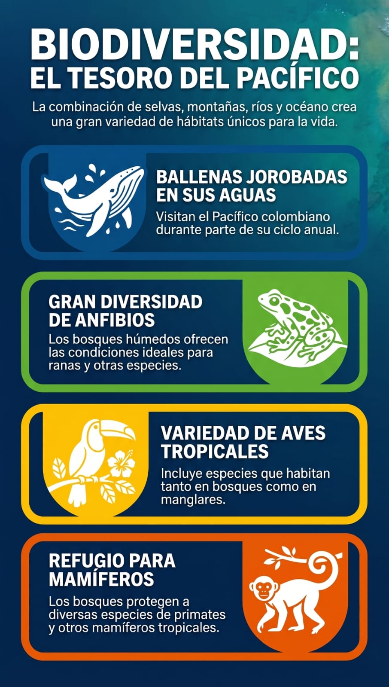
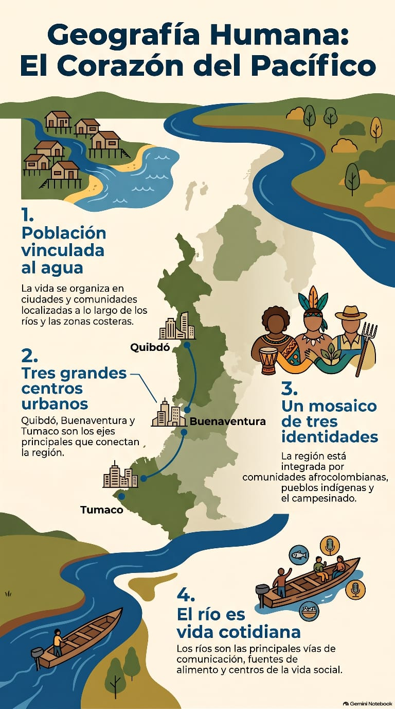

Serranías, llanuras y valles
El territorio combina sectores montañosos, llanuras costeras y valles asociados a los grandes ríos.
Un recorrido interactivo por un territorio de selvas húmedas, ríos, manglares, costa, océano, biodiversidad, comunidades, cultura y actividades económicas.
Para este proyecto se utiliza la agrupación regional del DANE: Cauca, Chocó, Nariño y Valle del Cauca. El territorio pacífico reúne litoral, selvas húmedas, ríos, esteros, manglares, islas y ambientes marino-costeros.
Relieve, clima, agua y ecosistemas están conectados. Cada elemento ayuda a explicar la vida y las actividades que se desarrollan en el territorio.
El territorio combina sectores montañosos, llanuras costeras y valles asociados a los grandes ríos.
Atrato, San Juan, Baudó, Mira y Patía hacen parte de la red hidrográfica asociada al Pacífico.
Amplias zonas presentan condiciones cálidas, húmedas y precipitaciones muy abundantes.
De la selva al océano existe una continuidad ecológica.
En el Pacífico, el agua relaciona ecosistemas y comunidades: los ríos desembocan en estuarios, los manglares reciben influencia marina y las rutas fluviales pueden ser fundamentales para la movilidad cotidiana.
La combinación de selvas, manglares, ríos y mar crea numerosos hábitats para especies residentes y migratorias.
La protección de bosques, manglares, ríos y ambientes marinos ayuda a conservar hábitats conectados. MinAmbiente también ha documentado acciones de restauración de manglares con participación de comunidades del litoral.
Leer sobre Biomanglar ↗La vida regional se construye en relación con ríos, costa, selva y centros urbanos. Hay presencia de comunidades afrocolombianas, indígenas y campesinas, con saberes y formas de organización vinculadas al territorio.
Buenaventura, Quibdó y Tumaco son centros urbanos importantes. La población también se distribuye en cabeceras y áreas rurales.
La oralidad, gastronomía, artesanías, música, danza, celebraciones y memoria transmiten conocimientos entre generaciones.
Ríos y esteros pueden cumplir funciones de movilidad, pesca, alimentación, trabajo y encuentro comunitario.
El Ministerio de las Culturas registra las músicas de marimba y los cantos y bailes tradicionales del Pacífico Sur como patrimonio cultural inmaterial inscrito en 2015 en la Lista Representativa del Patrimonio Cultural Inmaterial de la Humanidad. La marimba se interpreta con un xilófono de madera de palma y resonadores de bambú, acompañado por tambores y maracas.
Las actividades productivas están relacionadas con los recursos naturales, el océano, los ríos, los bosques, las ciudades y las vías de conexión.
Una misma actividad puede relacionar producción, transformación, transporte, comercio y servicios.
Áreas protegidas y territorios costeros permiten reconocer la relación entre biodiversidad, investigación, turismo de naturaleza y protección ambiental.
Para analizar cada problema conviene preguntar: ¿qué lo causa?, ¿qué consecuencias produce?, ¿a quién afecta? y ¿qué respuestas pueden plantearse?
Ahora los materiales que agregaste al repositorio se integran directamente en la web: video, podcast, infografías y presentación.


Actividades creadas para esta página y basadas en los contenidos del Pacífico.
Ordena desde el nacimiento hasta el océano.
Selecciona un sector y clasifica cada actividad.
Escoge una respuesta considerando más de una dimensión del territorio.
La información no aparece aislada: cada elemento del territorio se relaciona con los demás.
Ríos, esteros, manglares y mar forman una red de ambientes que sostiene biodiversidad y actividades humanas.
Los bosques aportan hábitat, regulan procesos ecológicos y almacenan carbono.
La música, la oralidad, la gastronomía y las celebraciones transmiten conocimientos y formas de identidad.
Pesca, agricultura, turismo, transformación y transporte dependen de las condiciones naturales y sociales.
Ríos, quebradas, esteros y océano forman una red que influye en ecosistemas, movilidad y actividades productivas.
Es un ecosistema de transición. MinAmbiente señala su importancia ecológica y socioambiental para el litoral.
La música de marimba, los cantos y bailes tradicionales se relacionan con la memoria y la vida comunitaria.
Producción, transformación, transporte, comercio y servicios se conectan con las condiciones del territorio.
Las fuentes institucionales sirven para ampliar datos, verificar información y continuar la investigación del territorio.
El DANE reportó para 2023 preliminar un PIB regional de 211 billones de pesos a precios corrientes para la agrupación Pacífica. Dentro de esa agrupación, Valle del Cauca representó 72,3 %, Cauca 13,4 %, Nariño 11,1 % y Chocó 3,2 %.
Ver boletín técnico DANE ↗MinAmbiente registra una extensión aproximada de 194.880 hectáreas de manglar en el litoral Pacífico colombiano dentro de sus estimaciones citadas para el ecosistema, y documenta procesos de conservación, zonificación y restauración.
Consultar información sobre manglares ↗El Pacífico reúne naturaleza, comunidades, cultura, producción y desafíos. Comprender esas conexiones permite construir una mirada más completa del territorio.
Volver al inicio ↑{kind=link}
{kind=link}